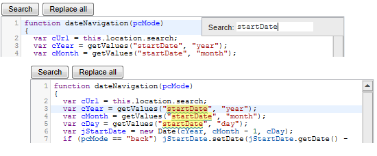
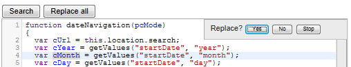
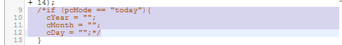

Using code editors:
Syntax highlighting happens automatically as you type. If you type a bracket or quotation mark, the editor automatically inserts a matching bracket or quotation mark. The current line is also highlighted.
Indenting
To indent a line, click anywhere in the line or select a range of lines, then press Tab; to reduce the indent, click Shift+Tab.
Search and Replace
The Search button allows you to search for specific text; the editor highlights all instances of the text you enter.

The Replace All button allows you to search for and replace all instances of specific text.
Shortcut keys are also available:
- Ctrl+F - Start searching
- Ctrl+G - Find next
- Shift+Ctrl+G - Find previous
- Shift+Ctrl+F - Replace (allows you to choose whether to replace each specific instance)

- Shift+Ctrl-R - Replace all
You can also highlight matching text by double-clicking a word - the editor shows matching text with a wavy underline.
Commenting
To comment out lines of code, click anywhere in the line or select a range of lines, then press Shift+Ctrl+/ .

To uncomment press Shift+Ctrl+Alt+/ .
Full Screen
If the editor contains a lot of code, you may find it easier to work in full-screen mode. Click anywhere in the editor box, then press F11 to switch to full-screen mode. The Search and Replace all buttons are not available in full-screen mode, but the shortcut keys work. To exit full-screen mode, press F11 or Esc.
Code Folding (JavaScript editor only)
Code folding allows you to collapse (hide) and display specific sections of the code. To collapse a section of code, click the line number (in the left margin) at the beginning of the code you want to collapse. The editor indicates the collapsed code with a ↔ symbol .

To display the code, click the ↔ symbol or the line number of the line that contains the collapsed text.